For this tutorial session, we will analyze three (linear regression) problems from top to bottom.
For this problem, we will analyse data about the mileage per gallon performances of various cars. The data set was retrieved from this page (with changes). You can download the .csv file here.
col.names <- c('mpg', 'cylinders', 'displacement', 'hp', 'weight', 'acceleration', 'year', 'origin')
car <- read.csv(file = 'others/car.csv', header = FALSE, sep = ',', col.names = col.names)
head(car, 5)## mpg cylinders displacement hp weight acceleration year origin
## 1 18 8 307 130 3504 12.0 70 1
## 2 16 8 304 150 3433 12.0 70 1
## 3 17 8 302 140 3449 10.5 70 1
## 4 NA 8 350 165 4142 11.5 70 1
## 5 NA 8 351 153 4034 11.0 70 1Explore the data set, fit an appropriate linear model, check the model assumptions, and plot the results. At the end, make predictions for unknown values.
Let’s start with the summary() function.
summary(car)## mpg cylinders displacement hp weight
## Min. :12.00 Min. :3.000 Min. : 68.0 Min. : 48.0 Min. :1613
## 1st Qu.:18.00 1st Qu.:4.000 1st Qu.:107.0 1st Qu.: 77.5 1st Qu.:2237
## Median :23.00 Median :4.000 Median :148.5 Median : 92.0 Median :2804
## Mean :23.74 Mean :5.372 Mean :187.9 Mean :100.9 Mean :2936
## 3rd Qu.:29.80 3rd Qu.:6.000 3rd Qu.:250.0 3rd Qu.:113.5 3rd Qu.:3456
## Max. :39.00 Max. :8.000 Max. :400.0 Max. :190.0 Max. :4746
## NA's :6 NA's :2
## acceleration year origin
## Min. : 8.00 Min. :70.00 Min. :1.000
## 1st Qu.:14.00 1st Qu.:73.00 1st Qu.:1.000
## Median :15.50 Median :76.00 Median :1.000
## Mean :15.58 Mean :76.36 Mean :1.558
## 3rd Qu.:17.00 3rd Qu.:79.75 3rd Qu.:2.000
## Max. :23.50 Max. :82.00 Max. :3.000
## As one can see from the above table, some multi-valued discrete attributes are being interpreted as integer values; also, we have NA’s for the mpg and horsepower attributes. To verify (and change) the variable types, we can do the following
car$cylinders <- as.factor(car$cylinders)
car$year <- as.factor(car$year)
car$origin <- as.factor(car$origin)Also, as there are too many classes for the year, and as a way to make our analyses simpler, let’s categorize the cars into old and new, such that cars from before 77 will be labeled as 1 and the remaining cars will be labeled as 2.
car$year <- as.factor(sapply(X = car$year, FUN = function (item) { ifelse(item %in% 70:76, 1, 2) }))
summary(car)## mpg cylinders displacement hp weight
## Min. :12.00 3: 3 Min. : 68.0 Min. : 48.0 Min. :1613
## 1st Qu.:18.00 4:134 1st Qu.:107.0 1st Qu.: 77.5 1st Qu.:2237
## Median :23.00 5: 1 Median :148.5 Median : 92.0 Median :2804
## Mean :23.74 6: 62 Mean :187.9 Mean :100.9 Mean :2936
## 3rd Qu.:29.80 8: 58 3rd Qu.:250.0 3rd Qu.:113.5 3rd Qu.:3456
## Max. :39.00 Max. :400.0 Max. :190.0 Max. :4746
## NA's :6 NA's :2
## acceleration year origin
## Min. : 8.00 1:132 1:167
## 1st Qu.:14.00 2:126 2: 38
## Median :15.50 3: 53
## Mean :15.58
## 3rd Qu.:17.00
## Max. :23.50
## Now, let’s deal with the missing values. Different approaches could have been taken here, and they highly depend on your problem (and your knowledge about the problem). For this particular example, suppose that we want to describe the mpg data as a function of the hp and year. Since we do not now much about this data, a simpler options would be to exclude the instances with missing values for the hp. Let’s do this.
car2 <- car[!is.na(car$hp), c('mpg', 'hp', 'year')]
summary(car2)## mpg hp year
## Min. :12.00 Min. : 48.0 1:131
## 1st Qu.:18.00 1st Qu.: 77.5 2:125
## Median :23.00 Median : 92.0
## Mean :23.75 Mean :100.9
## 3rd Qu.:29.80 3rd Qu.:113.5
## Max. :39.00 Max. :190.0
## NA's :6Given this smaller data set, our goal might be to predict the missing values for mpg. However, to do this, we have to have a data set with no NA’s. Let’s name it car3.
car3 <- car2[!is.na(car2$mpg), ]As a last exploration step, let’s plot our data set.
plot(mpg ~ hp, pch = 19, col = (as.numeric(year) + 1), data = car3)
legend('topright', c('old', 'new'), col = unique(as.numeric(car3$year) + 1), pch = 19)From the previous plot, although we suspect that a linear model might not be appropriate for this data set as it is, let’s fit it and analyse the results.
In particular, we will fit the following model
\[ \texttt{mpg}_i = \beta_0 + \texttt{hp}_i \cdot \beta_1 + \epsilon_i; \text{ such that } \epsilon_i \overset{\text{i.i.d.}}{\sim} \text{Normal}(0, \sigma^2_{\epsilon}) \]
model <- lm(formula = mpg ~ hp, data = car3)
summary(model)##
## Call:
## lm(formula = mpg ~ hp, data = car3)
##
## Residuals:
## Min 1Q Median 3Q Max
## -9.3908 -3.3377 -0.0706 2.7713 11.7533
##
## Coefficients:
## Estimate Std. Error t value Pr(>|t|)
## (Intercept) 42.543005 0.941244 45.20 <2e-16 ***
## hp -0.188003 0.009001 -20.89 <2e-16 ***
## ---
## Signif. codes: 0 '***' 0.001 '**' 0.01 '*' 0.05 '.' 0.1 ' ' 1
##
## Residual standard error: 4.362 on 248 degrees of freedom
## Multiple R-squared: 0.6376, Adjusted R-squared: 0.6361
## F-statistic: 436.2 on 1 and 248 DF, p-value: < 2.2e-16From the above summary, we have strong evidences that both \(\beta_0\) and \(\beta_1\) are different than 0. The residuals do not seem symmetric, though. Also, \(\text{R}^2 =\) 0.6375558. Now, let’s plot the fitted model.
plot(mpg ~ hp, pch = 19, col = (as.numeric(year) + 1), data = car3)
abline(model)
legend('topright', c('old', 'new'), col = unique(as.numeric(car3$year) + 1), pch = 19)However, notice that the relation between hp and mpg does not seem to be linear, and the age might also provide information when describe the response variable. Thus, before taking any conclusions from the fitted model, let’s do an analysis of residuals. We will focus on the “Residuals vs Fitted” and “Normal Q-Q” plots.
par(mfrow = c(1, 2))
plot(model, which = c(1, 2))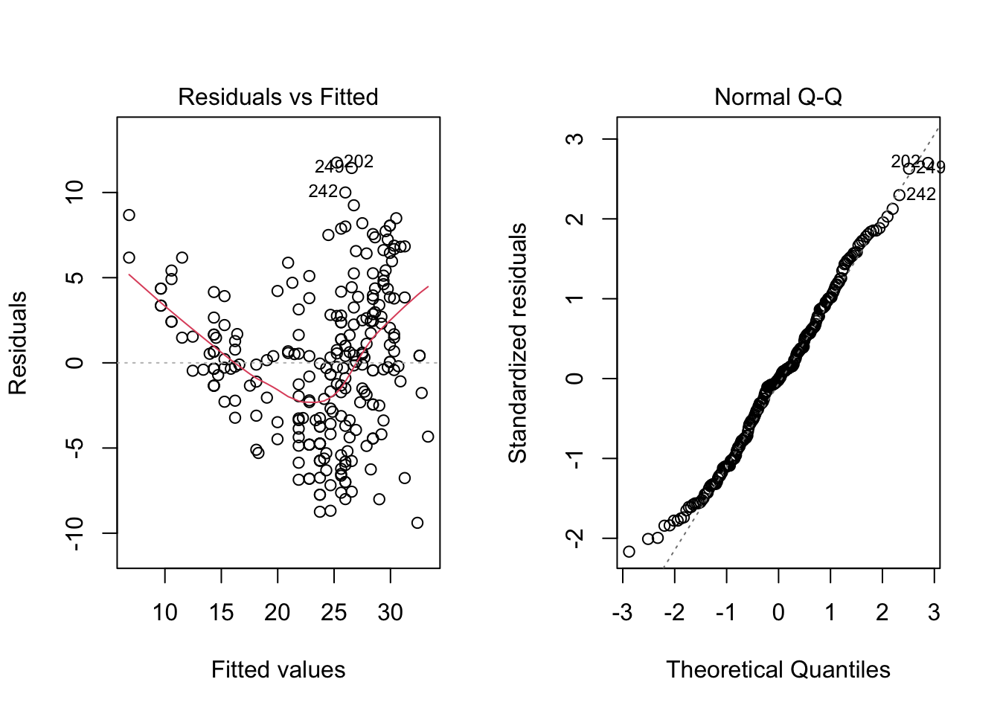
par(mfrow = c(1, 1))From the “Residuals vs Fitted” plots, we may see that a linear relationship does not correctly describe how mpg is written as a function of hp, since we can see a pattern for the residuals (as opposed to a “well spread and random” cloud of points around \(y = 0\)). Also, from the “Normal Q-Q” plot, the residuals seem to be normally distributed (we will test it).
To confirm these visual analyses, let’s conduct a proper test. To check for the assumption of equal variance, since we have a quantitative regressor, we can use the Score Test, available in the car package through the ncvTest() function. Also, to check for the normality of the residuals, we will use the Shapiro-Wilk test (shapiro.test()).
library('car')## Loading required package: carData##
## Attaching package: 'car'## The following object is masked from 'package:dplyr':
##
## recode## The following object is masked from 'package:purrr':
##
## somencvTest(model)## Non-constant Variance Score Test
## Variance formula: ~ fitted.values
## Chisquare = 6.945645, Df = 1, p = 0.0084024shapiro.test(residuals(model))##
## Shapiro-Wilk normality test
##
## data: residuals(model)
## W = 0.98926, p-value = 0.06041As the p-values are too small for the first test, we have strong evidences against equal variance. On the other hand, we fail to reject the hypothesis of normally distributed residuals (with a significance level of \(5\%\)). Thus, as at least one assumption for this model does not hold, the results might not be reliable.
As a way to overcome this issue, we will transform the data according to the following rule
\[ w(\lambda) = \begin{cases} (y^{\lambda} - 1)/\lambda &, \text{ if } \lambda \neq 0 \\ \log(y) &, \text{ if } \lambda = 0. \end{cases} \]
This can be achieved by using the boxCox() function from the car package. Based on it, we will retrieve the value of lambda and will apply the above transformation.
bc <- boxCox(model)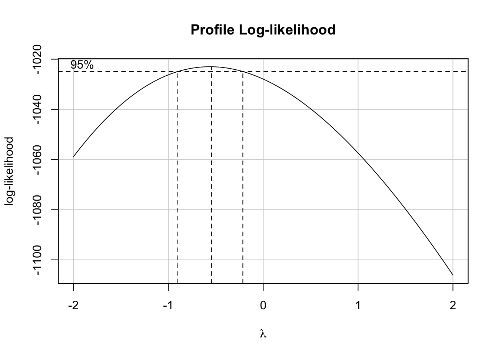
(lambda <- bc$x[which.max(bc$y)])## [1] -0.5454545Now, let’s create a function to transform our data based on the value of \(\lambda\) and based on the above rule. We will name it tranfData(). Also, we will create a function to transform our data back to the original scale. We will name it tranfData_back(). This second function, if \(\lambda \neq 0\), will be given by \(y(\lambda) = (w\lambda + 1)^{1/\lambda}\).
transfData <- function (data, lambda) { ((data ^ lambda - 1) / lambda) }
transfData_back <- function (data, lambda) { ((data * lambda + 1) ^ (1 / lambda)) }Therefore, we can easily transform our data, given \(\lambda =\) -0.55, in the following way
car3$mpg_transf <- sapply(X = car3$mpg, FUN = transfData, lambda = lambda)
head(car3, 5)## mpg hp year mpg_transf
## 1 18 130 1 1.454413
## 2 16 150 1 1.429271
## 3 17 140 1 1.442414
## 8 14 160 1 1.398742
## 9 24 95 1 1.509442plot(mpg_transf ~ hp, pch = 19, col = (as.numeric(year) + 1), data = car3)
legend('topright', c('old', 'new'), col = unique(as.numeric(car3$year) + 1), pch = 19)Finally, we can fit again a linear model for the transformed data.
model2 <- lm(formula = mpg_transf ~ hp, data = car3)
summary(model2)##
## Call:
## lm(formula = mpg_transf ~ hp, data = car3)
##
## Residuals:
## Min 1Q Median 3Q Max
## -0.079235 -0.021397 0.001967 0.020464 0.074192
##
## Coefficients:
## Estimate Std. Error t value Pr(>|t|)
## (Intercept) 1.656e+00 6.607e-03 250.69 <2e-16 ***
## hp -1.622e-03 6.318e-05 -25.68 <2e-16 ***
## ---
## Signif. codes: 0 '***' 0.001 '**' 0.01 '*' 0.05 '.' 0.1 ' ' 1
##
## Residual standard error: 0.03062 on 248 degrees of freedom
## Multiple R-squared: 0.7267, Adjusted R-squared: 0.7256
## F-statistic: 659.3 on 1 and 248 DF, p-value: < 2.2e-16plot(mpg_transf ~ hp, pch = 19, col = (as.numeric(year) + 1), data = car3)
abline(model2)
legend('topright', c('old', 'new'), col = unique(as.numeric(car3$year) + 1), pch = 19)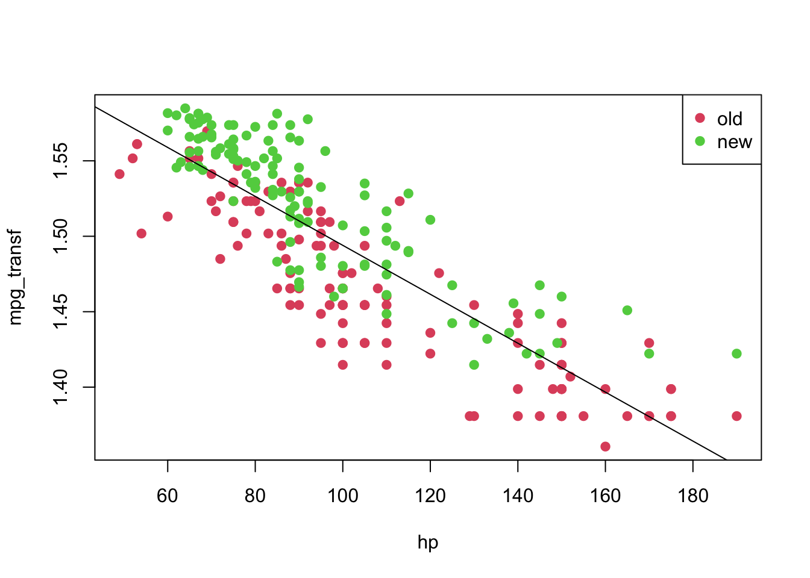
Also, we can analyse the diagnostic plots, as before. As well as conduct the appropriate tests.
par(mfrow = c(1, 2))
plot(model2, which = c(1, 2))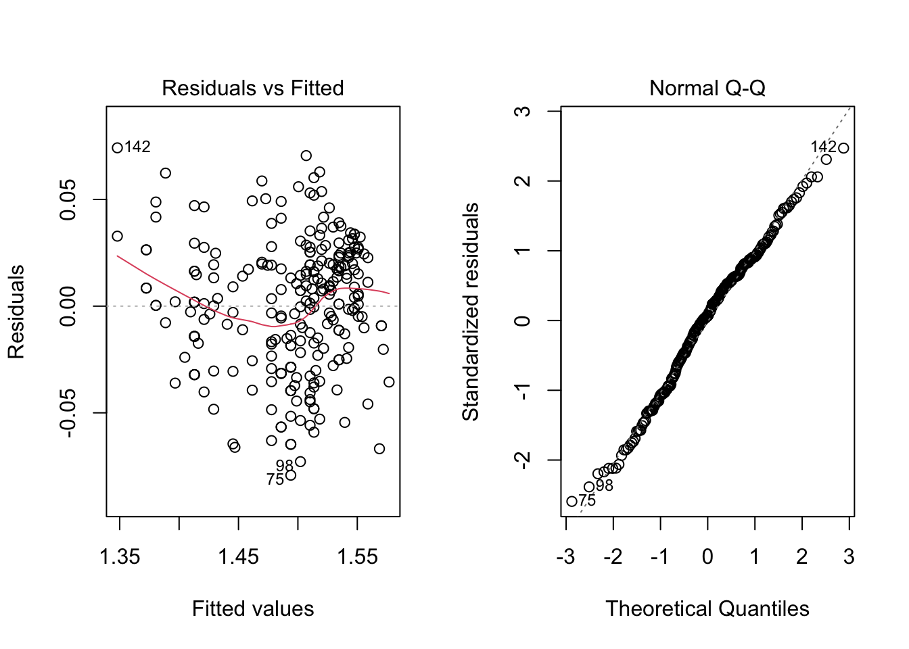
par(mfrow = c(1, 1))
ncvTest(model2)## Non-constant Variance Score Test
## Variance formula: ~ fitted.values
## Chisquare = 1.087962, Df = 1, p = 0.29692shapiro.test(residuals(model2))##
## Shapiro-Wilk normality test
##
## data: residuals(model2)
## W = 0.98934, p-value = 0.06252As we would expect, the results look much better now. However, we can still use information about year, which seems to play a role in explaining the response variable. That being said, let’s fit this new model.
Notice that we will consider a model with interaction (an interaction occurs when an independent variable has a different effect on the outcome depending on the values of another independent variable). For an extensive discussion on this topic, one can refer to this link.
model3 <- lm(formula = mpg_transf ~ hp * year, data = car3)
summary(model3)##
## Call:
## lm(formula = mpg_transf ~ hp * year, data = car3)
##
## Residuals:
## Min 1Q Median 3Q Max
## -0.061671 -0.017084 0.001801 0.018128 0.065467
##
## Coefficients:
## Estimate Std. Error t value Pr(>|t|)
## (Intercept) 1.620e+00 7.767e-03 208.563 < 2e-16 ***
## hp -1.435e-03 6.886e-05 -20.836 < 2e-16 ***
## year2 4.570e-02 1.159e-02 3.945 0.000104 ***
## hp:year2 -1.118e-04 1.133e-04 -0.986 0.325015
## ---
## Signif. codes: 0 '***' 0.001 '**' 0.01 '*' 0.05 '.' 0.1 ' ' 1
##
## Residual standard error: 0.02561 on 246 degrees of freedom
## Multiple R-squared: 0.8103, Adjusted R-squared: 0.808
## F-statistic: 350.3 on 3 and 246 DF, p-value: < 2.2e-16From the above table, we can see that the interaction (hp:year2) is not significant; therefore, we can fit a simpler model.
model4 <- lm(formula = mpg_transf ~ hp + year, data = car3)
coeffi <- model4$coefficients
summary(model4)##
## Call:
## lm(formula = mpg_transf ~ hp + year, data = car3)
##
## Residuals:
## Min 1Q Median 3Q Max
## -0.061994 -0.017143 0.001694 0.017929 0.065681
##
## Coefficients:
## Estimate Std. Error t value Pr(>|t|)
## (Intercept) 1.624e+00 6.323e-03 256.91 <2e-16 ***
## hp -1.476e-03 5.469e-05 -26.99 <2e-16 ***
## year2 3.477e-02 3.353e-03 10.37 <2e-16 ***
## ---
## Signif. codes: 0 '***' 0.001 '**' 0.01 '*' 0.05 '.' 0.1 ' ' 1
##
## Residual standard error: 0.02561 on 247 degrees of freedom
## Multiple R-squared: 0.8096, Adjusted R-squared: 0.808
## F-statistic: 525 on 2 and 247 DF, p-value: < 2.2e-16plot(mpg_transf ~ hp, pch = 19, col = (as.numeric(year) + 1), data = car3)
abline(coeffi[[1]], coeffi[[2]], col = 2)
abline(coeffi[[1]] + coeffi[[3]], coeffi[[2]], col = 3)
legend('topright', c('old', 'new'), col = unique(as.numeric(car3$year) + 1), pch = 19)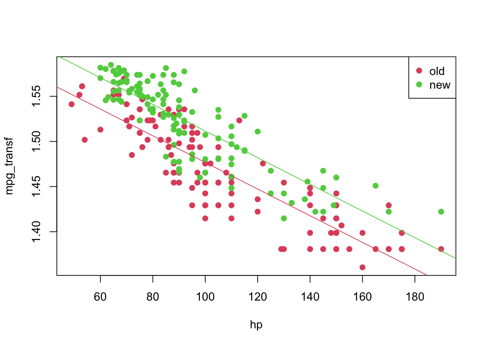
Again, we can analyse the diagnostic plots and conduct the appropriate tests.
par(mfrow = c(1, 2))
plot(model4, which = c(1, 2))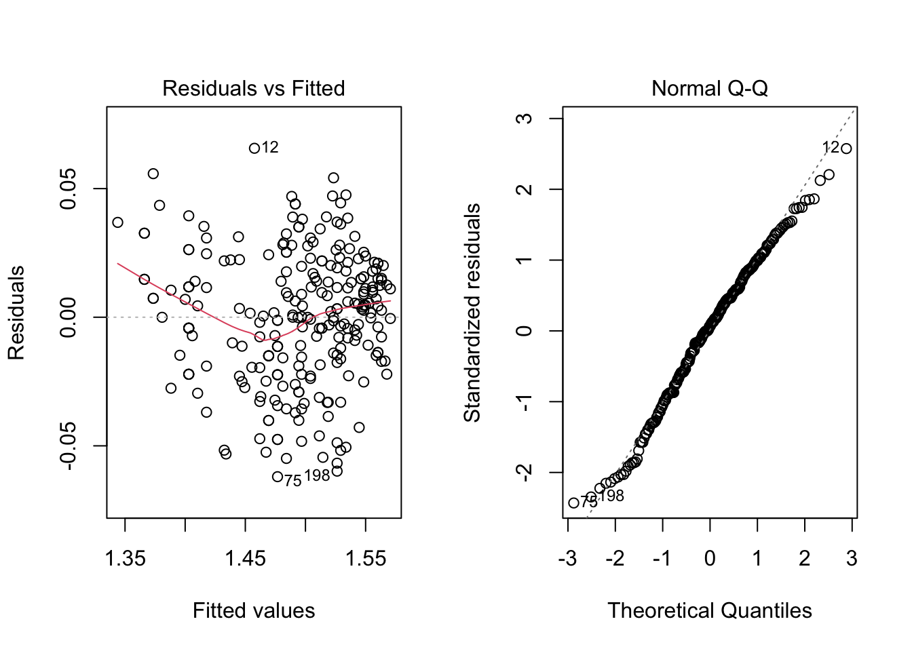
par(mfrow = c(1, 1))
ncvTest(model4)## Non-constant Variance Score Test
## Variance formula: ~ fitted.values
## Chisquare = 2.838162, Df = 1, p = 0.092049shapiro.test(residuals(model4))##
## Shapiro-Wilk normality test
##
## data: residuals(model4)
## W = 0.99006, p-value = 0.08516Thus, for a significance level of \(5\%\) we fail to reject the hypotheses of equal variance and normality. Meaning that this might be an appropriate model for our data. However, recall that we are modelling a transformed data set. We can get a model for our original data by doing the following. For a transformation \(f\), we have the
\[\begin{align*} \texttt{mpg}_i &= f^{-1}(1.624 -0.001\texttt{hp}_i)&, \text{ if } \texttt{year} = 1 \\ \texttt{mpg}_i &= f^{-1}((1.624 + 0.035) -0.001\texttt{hp}_i)&, \text{ if } \texttt{year} = 2 \end{align*}\]
And we can plot it in the following way
plot(mpg ~ hp, pch = 19, col = (as.numeric(year) + 1), data = car3)
curve(transfData_back(coeffi[[1]] + coeffi[[2]] * x, lambda = lambda), from = 0, to = 250, add = TRUE, col = 2)
curve(transfData_back((coeffi[[1]] + coeffi[[3]]) + coeffi[[2]] * x, lambda = lambda), from = 0, to = 250, add = TRUE, col = 3)
legend('topright', c('old', 'new'), col = unique(as.numeric(car3$year) + 1), pch = 19)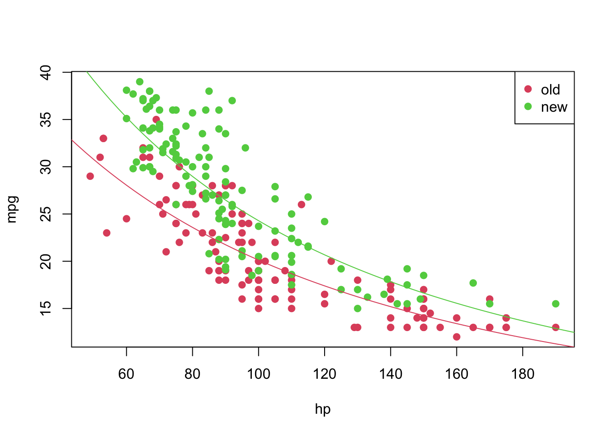
Now that we have a “good” fitted model, we can predict, as suggested before, the values of mpg for which we had NA’s before. We can do this in the following way
pos_unk <- which(is.na(car2$mpg))
unknown <- car2[is.na(car2$mpg), ]
(predicted_values <- sapply(X = predict(object = model4, newdata = data.frame(hp = unknown$hp, year = unknown$year)), FUN = transfData_back, lambda = lambda))## 1 2 3 4 5 6
## 13.00153 13.98905 12.25847 12.25847 31.38660 22.37227car2[is.na(car2$mpg), 'mpg'] <- predicted_values
pch <- rep(19, nrow(car2)); pch[pos_unk] <- 9
plot(mpg ~ hp, pch = pch, col = (as.numeric(year) + 1), data = car2)
curve(transfData_back(coeffi[[1]] + coeffi[[2]] * x, lambda = lambda), from = 0, to = 250, add = TRUE, col = 2)
curve(transfData_back((coeffi[[1]] + coeffi[[3]]) + coeffi[[2]] * x, lambda = lambda), from = 0, to = 250, add = TRUE, col = 3)
legend('topright', c('old', 'new'), col = unique(as.numeric(car3$year) + 1), pch = 19)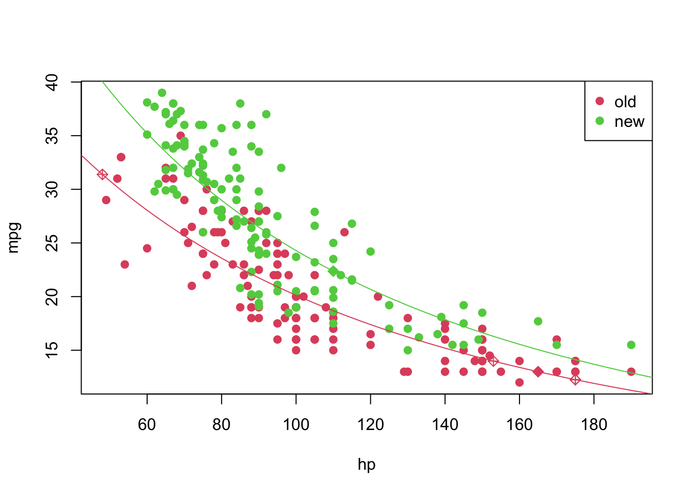
For this problem, we will analyse data collected in an observational study in a semiconductor manufacturing plant. Data were retrieved from the Applied Statistics and Probability for Engineers book. You can download the .csv file here. In this plant, the finished semiconductor is wire-bonded to a frame. The variables reported are pull strength (a measure of the amount of force required to break the bond), the wire length, and the height of the die.
col.names <- c('pull_strength', 'wire_length', 'height')
wire <- read.csv(file = 'others/wire_bond.csv', header = FALSE, sep = ',', col.names = col.names)
head(wire, 5)## pull_strength wire_length height
## 1 9.95 2 50
## 2 24.45 8 110
## 3 31.75 11 120
## 4 35.00 10 550
## 5 25.02 8 295Explore the data set, fit an appropriate linear model for the data, check the model assumptions, and plot the fitted plan. At the end, make predictions for unknown values.
Let’s start with the summary() function.
summary(wire)## pull_strength wire_length height
## Min. : 9.60 Min. : 1.00 Min. : 50.0
## 1st Qu.:17.08 1st Qu.: 4.00 1st Qu.:200.0
## Median :24.45 Median : 8.00 Median :360.0
## Mean :29.03 Mean : 8.24 Mean :331.8
## 3rd Qu.:37.00 3rd Qu.:11.00 3rd Qu.:500.0
## Max. :69.00 Max. :20.00 Max. :600.0In this case, there are no missing values—which is great. However, since we want to use most information from this data set, it might not be easy to visualize how one attribute (in our case pull_strength) can be written as a function of more than two variables at the same time. Fortunately, we can still plot data in 3D (using the scatterplot3d() function from the scatterplot3d package).
library('scatterplot3d')
scatterplot3d(wire$wire_length, wire$height, wire$pull_strength, color = 2, pch = 19, angle = 70)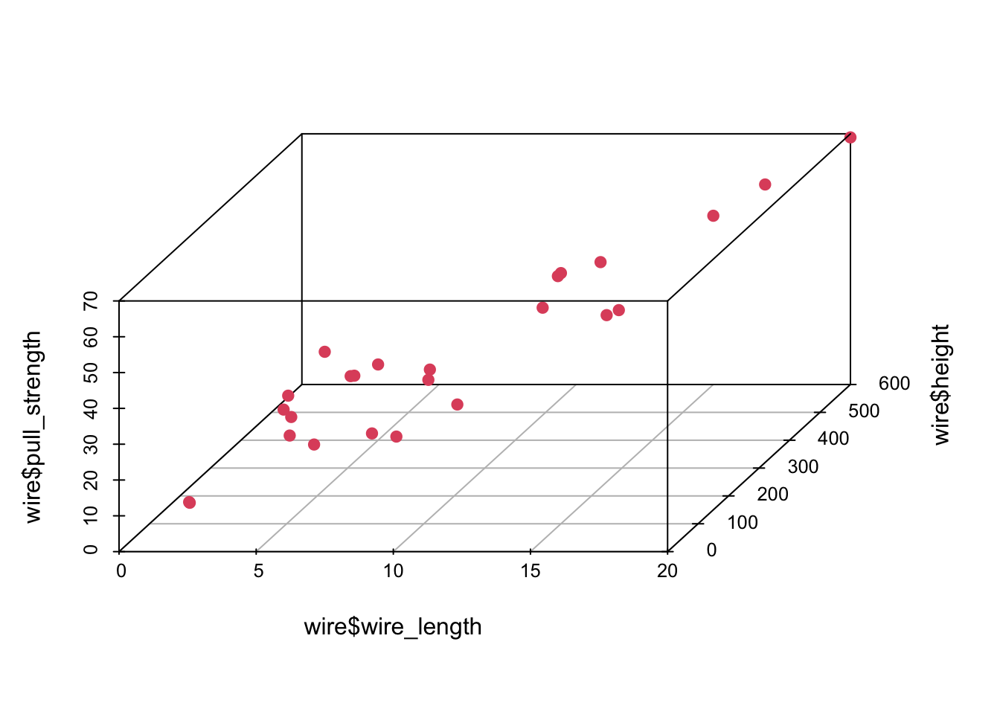
Also, it is useful to see how variables are correlated. To do this, we can plot (at least) two types of graphs; in this case, we will use the scatterplotMatrix() function from the car package, and the corrplot.mixed() function from the corrplot package to plot the correlation (from cor()) matrix.
library('car')
scatterplotMatrix(wire)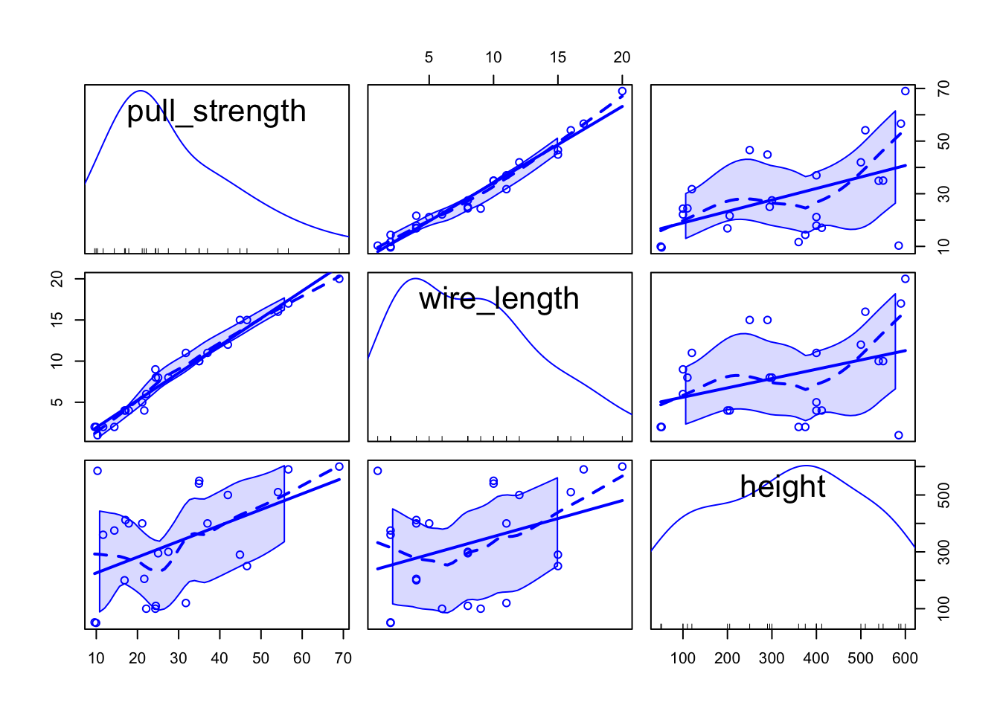
library('corrplot')## corrplot 0.92 loadedcorrplot.mixed(cor(wire))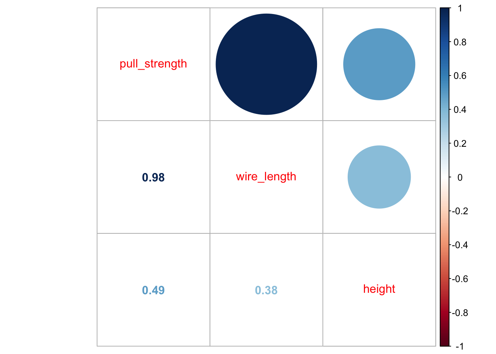
From the second plot, we can see that pull_strength is highly correlated with wire_length, and this relation is detailed in the first plot. These graphs will be even more useful once we have more variables (as we will see in our next problem).
Our very first task will be fitting a model with all variables so that we can try to explain how pull_strength relates with the other variables. We can do this in the following way.
model <- lm(formula = pull_strength ~ ., data = wire)
summary(model)##
## Call:
## lm(formula = pull_strength ~ ., data = wire)
##
## Residuals:
## Min 1Q Median 3Q Max
## -3.865 -1.542 -0.362 1.196 5.841
##
## Coefficients:
## Estimate Std. Error t value Pr(>|t|)
## (Intercept) 2.263791 1.060066 2.136 0.044099 *
## wire_length 2.744270 0.093524 29.343 < 2e-16 ***
## height 0.012528 0.002798 4.477 0.000188 ***
## ---
## Signif. codes: 0 '***' 0.001 '**' 0.01 '*' 0.05 '.' 0.1 ' ' 1
##
## Residual standard error: 2.288 on 22 degrees of freedom
## Multiple R-squared: 0.9811, Adjusted R-squared: 0.9794
## F-statistic: 572.2 on 2 and 22 DF, p-value: < 2.2e-16As we can see from the summary, for a significance level of \(5\%\), all coefficients are different than zero. Thus, we should keep them (for our next problem, we will try to simplify the model further).
Once we have the model, a next step would be performing a residual analysis. To do this, we can plot the diagnostic graphs and run the appropriate tests.
par(mfrow = c(1, 2))
plot(model, which = c(1, 2))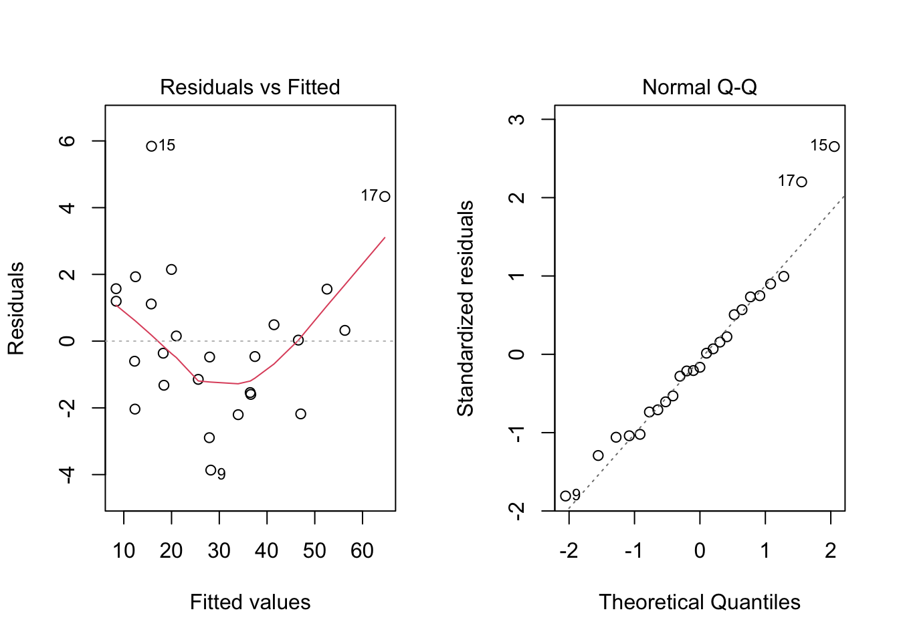
par(mfrow = c(1, 1))The plot seems okay, but we still have to do the tests. As a remark, and as extracted from this page, “the red line is a LOWESS fit to your residuals vs fitted plot. Basically, it’s smoothing over the points to look for certain kinds of patterns in the residuals. For example, if you fit a linear regression on data that looked like \(y = x^2\), you’d see a noticeable bowed shape”. Regarding the tests, we have the following
ncvTest(model)## Non-constant Variance Score Test
## Variance formula: ~ fitted.values
## Chisquare = 0.04524206, Df = 1, p = 0.83156shapiro.test(residuals(model))##
## Shapiro-Wilk normality test
##
## data: residuals(model)
## W = 0.95827, p-value = 0.381Also, from the test results, we fail to reject the equal variance and normality assumptions, meaning that we have a good model for our data.
In particular, the model is given by
\[\begin{align*} \texttt{pull_strength}_i &= 2.264 + 2.744\texttt{wire_length}_i + 0.013\texttt{height}_i \end{align*}\]
And we can plot the fitted model in the following way
plot3d <- scatterplot3d(wire$wire_length, wire$height, wire$pull_strength, color = 2, pch = 19, angle = 70)
plot3d$plane3d(model)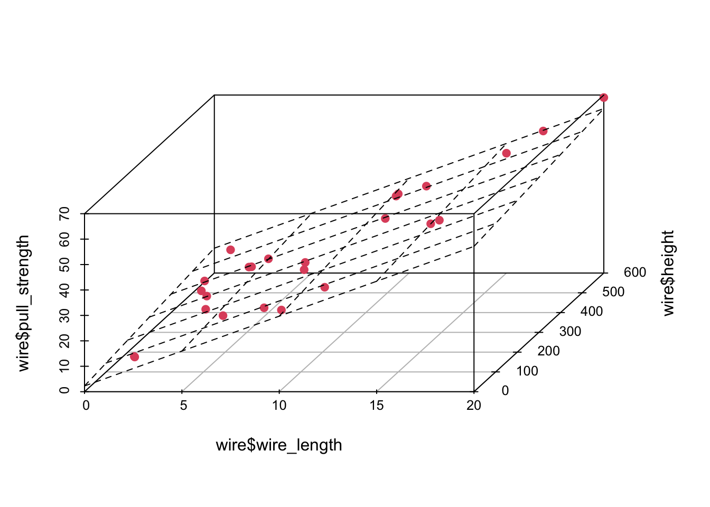
Now that we have a “good” fitted model, we can predict, the value of pull_strength for new values of wire_length and height. For instance, we can predict the value of pull_strength, such that wire_length is equal to 7.5 and 12.5 and height is equal to 150 and 450, respectively. Notice that your new points must lie within the range for the observed data, otherwise your model may not be appropriate for predicting extrapolated points.
newdata <- data.frame(wire_length = c(7.5, 12.5), height = c(150, 450))
(pred1 <- predict(object = model, newdata = newdata, interval = 'confidence'))## fit lwr upr
## 1 24.72499 23.33957 26.11040
## 2 42.20468 40.92987 43.47948(pred2 <- predict(object = model, newdata = newdata, interval = 'prediction'))## fit lwr upr
## 1 24.72499 19.78175 29.66822
## 2 42.20468 37.29130 47.11805newdata <- cbind(newdata, pull_strength = pred1[, 1])
wire <- rbind(wire, newdata)
plot3d <- scatterplot3d(wire$wire_length, wire$height, wire$pull_strength, color = c(rep(2, nrow(wire) - 2), 3, 3), pch = 19, angle = 70)
plot3d$plane3d(model)
legend('topleft', c('Observed data', 'New data'), col = c(2, 3), pch = 19)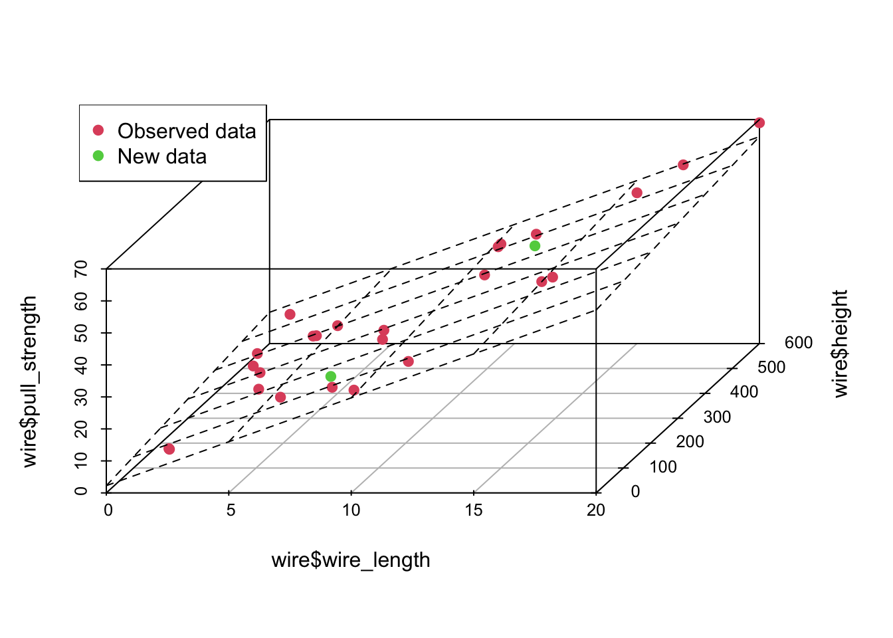
From the above predicted values, notice that this time, we added the confidence interval and the prediction interval. As explained Applied Statistics and Probability for Engineers book, “the prediction interval is always wider than the confidence interval. The confidence interval expresses the error in estimating the mean of a distribution, and the prediction interval expresses the error in predicting a future observation from the distribution at the point \(\mathbf{x}_0\). This must include the error in estimating the mean at that point as well as the inherent variability in the random variable pull_strength at the same value \(\mathbf{x} = \mathbf{x}_0\)”.
For this problem, we will analyse a data set with 6 variable (1 response variable + 6 covariates). Although their meaning may not be stated, we will see how important feature selection is when performing multiple regression analysis. You can download the .csv file here.
col.names <- c('var1', 'var2', 'var3', 'var4', 'var5', 'var6', 'response')
my_data <- read.csv(file = 'others/data.csv', header = FALSE, sep = ',', col.names = col.names)
head(data, 5)## heights ages
## 1 168.68 14
## 2 169.19 15
## 3 173.83 16
## 4 176.61 18
## 5 163.79 12Explore the data set, fit an appropriate (and reduced, based on any feature selection procedure) linear model for the data, check the model assumptions, and plot the results. At the end, make predictions for unknown values.
Let’s start with the summary() function.
summary(my_data)## var1 var2 var3 var4
## Min. :50.94 Min. : 92.32 Min. :44.06 Min. :0.0001482
## 1st Qu.:56.45 1st Qu.: 95.77 1st Qu.:47.24 1st Qu.:0.0045800
## Median :64.21 Median : 98.57 Median :49.63 Median :0.0131564
## Mean :63.96 Mean : 99.73 Mean :49.29 Mean :0.0163943
## 3rd Qu.:68.94 3rd Qu.:103.94 3rd Qu.:51.37 3rd Qu.:0.0249283
## Max. :79.30 Max. :107.66 Max. :54.52 Max. :0.0426500
## var5 var6 response
## Min. :1.801 Min. :63.08 Min. :210.5
## 1st Qu.:2.486 1st Qu.:69.98 1st Qu.:232.2
## Median :5.038 Median :74.97 Median :250.9
## Mean :4.709 Mean :75.77 Mean :252.8
## 3rd Qu.:6.493 3rd Qu.:81.05 3rd Qu.:270.3
## Max. :9.055 Max. :90.00 Max. :298.0There are no missing values so that we can jump in into the exploratory analyses. However, since we want to use most information from this data set, it is not easy to visualize how strength can be written as a function of more than two variables at the same time. But it might be useful to see how variables are correlated. To do this, we can use the scatterplotMatrix() function from the car package, and the corrplot.mixed() function from the corrplot package.
library('car')
scatterplotMatrix(my_data)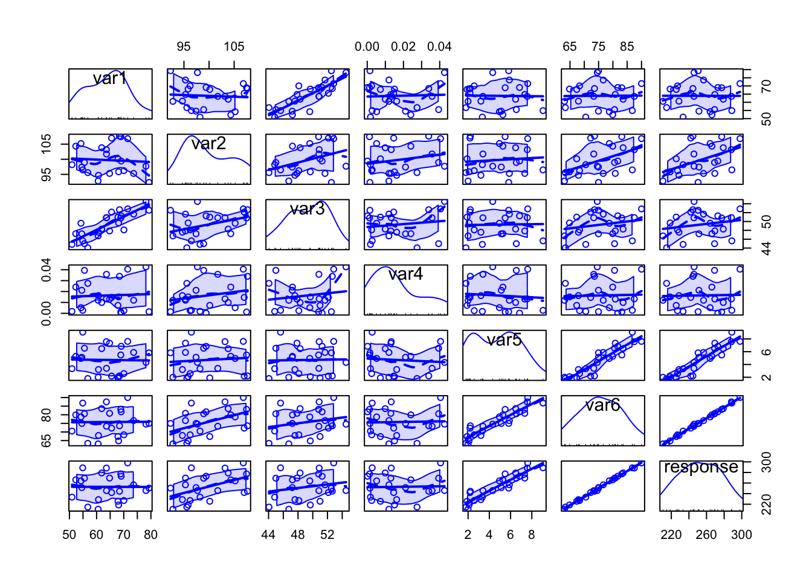
Specially when there are too many variables or too many data points per plot, it might be difficult to analyse all the details, but from the above plot we can have a rough idea on how each variable can be written as a function of others.
library('corrplot')
corrplot.mixed(cor(my_data))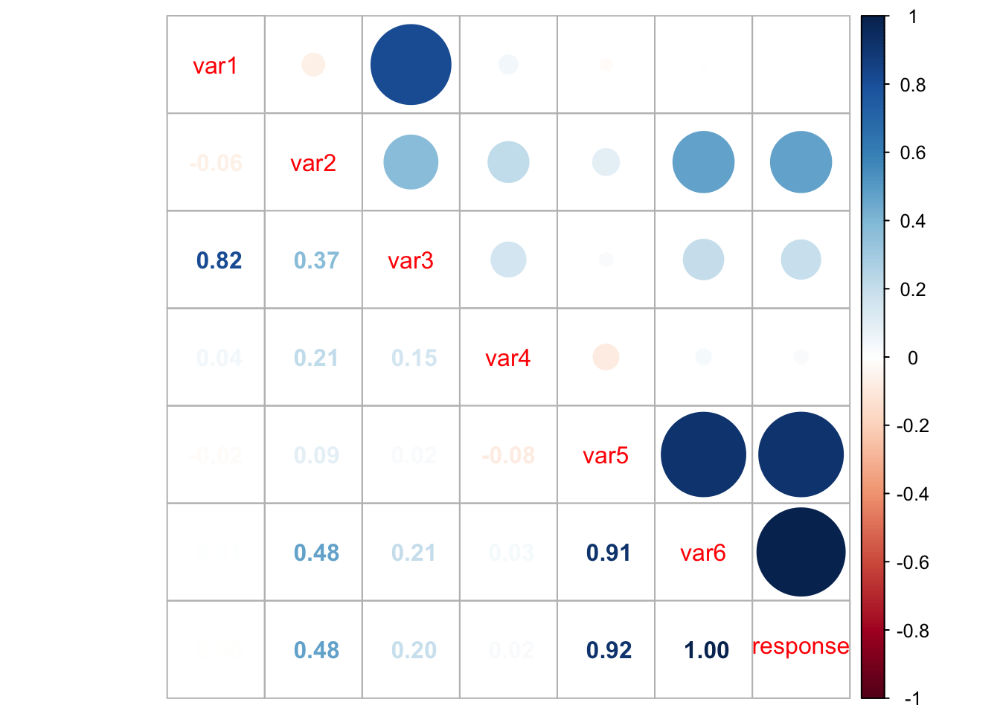
However, from the above plot we may have clearer information about the correlation between pair of variables. For instance, var1 and var3 are highly correlated, as well as var5 and var6, var5 and response, and var6 and response. This information can help us having an idea on which attributes better explain the dependent variable.
Our very first task will be fitting a model with all variables so that we can try to explain how the response variable relates to the covariates. We can do this in the following way.
model <- lm(formula = response ~ ., data = my_data)
summary(model)##
## Call:
## lm(formula = response ~ ., data = my_data)
##
## Residuals:
## Min 1Q Median 3Q Max
## -1.29614 -0.41203 -0.05714 0.32644 1.68448
##
## Coefficients:
## Estimate Std. Error t value Pr(>|t|)
## (Intercept) -0.01567 4.31348 -0.004 0.9971
## var1 0.16437 0.05915 2.779 0.0129 *
## var2 1.65363 0.25551 6.472 5.74e-06 ***
## var3 -0.24772 0.15677 -1.580 0.1325
## var4 15.25598 13.40879 1.138 0.2710
## var5 7.85702 1.19346 6.583 4.65e-06 ***
## var6 0.69112 0.38603 1.790 0.0912 .
## ---
## Signif. codes: 0 '***' 0.001 '**' 0.01 '*' 0.05 '.' 0.1 ' ' 1
##
## Residual standard error: 0.8177 on 17 degrees of freedom
## Multiple R-squared: 0.9992, Adjusted R-squared: 0.9989
## F-statistic: 3540 on 6 and 17 DF, p-value: < 2.2e-16From the above summary table, we may see two covariates that might not be significant, namely var3, var4, and var6. As we prefer simpler models over more complex models, provided they have the same performance, let’s remove the one with the highest p-value first (var4). We can do this using the update() function.
model2 <- update(model, ~ . - var4)
summary(model2)##
## Call:
## lm(formula = response ~ var1 + var2 + var3 + var5 + var6, data = my_data)
##
## Residuals:
## Min 1Q Median 3Q Max
## -1.56817 -0.37178 -0.02967 0.30375 1.88355
##
## Coefficients:
## Estimate Std. Error t value Pr(>|t|)
## (Intercept) -0.23242 4.34438 -0.053 0.9579
## var1 0.15298 0.05877 2.603 0.0180 *
## var2 1.57953 0.24908 6.341 5.64e-06 ***
## var3 -0.22602 0.15687 -1.441 0.1668
## var5 7.46733 1.15258 6.479 4.29e-06 ***
## var6 0.81454 0.37349 2.181 0.0427 *
## ---
## Signif. codes: 0 '***' 0.001 '**' 0.01 '*' 0.05 '.' 0.1 ' ' 1
##
## Residual standard error: 0.8244 on 18 degrees of freedom
## Multiple R-squared: 0.9991, Adjusted R-squared: 0.9989
## F-statistic: 4179 on 5 and 18 DF, p-value: < 2.2e-16Now, let’s remove var3.
model3 <- update(model2, ~ . - var3)
summary(model3)##
## Call:
## lm(formula = response ~ var1 + var2 + var5 + var6, data = my_data)
##
## Residuals:
## Min 1Q Median 3Q Max
## -1.6041 -0.4214 -0.0859 0.4792 1.5974
##
## Coefficients:
## Estimate Std. Error t value Pr(>|t|)
## (Intercept) -0.78392 4.44833 -0.176 0.8620
## var1 0.07899 0.02937 2.690 0.0145 *
## var2 1.46614 0.24293 6.035 8.33e-06 ***
## var5 7.19347 1.16854 6.156 6.46e-06 ***
## var6 0.90352 0.37864 2.386 0.0276 *
## ---
## Signif. codes: 0 '***' 0.001 '**' 0.01 '*' 0.05 '.' 0.1 ' ' 1
##
## Residual standard error: 0.8474 on 19 degrees of freedom
## Multiple R-squared: 0.999, Adjusted R-squared: 0.9988
## F-statistic: 4944 on 4 and 19 DF, p-value: < 2.2e-16Although var6 has a p-value of 0.0276 and we already know that it is highly correlated with var5, let’s keep it for now. However, in order to have sufficiently simpler models, we can also compute and analyse the Variance Inflation Factor (VIF), which is a measure of the amount of multicollinearity in a set of multiple regression variables. According to this page the VIF for a regression model variable is equal to the ratio of the overall model variance to the variance of a model that includes only that single independent variable. This ratio is calculated for each independent variable. A high VIF indicates that the associated independent variable is highly collinear with the other variables in the model. Also, as a rule of thumb, we can exclude variables with VIF greater than 2, provided we do this for one variable at a time. To do this, we can use the vif() function from the car package.
vif(model3)## var1 var2 var5 var6
## 1.740913 44.823922 211.048276 271.824355As we expected, var6 can be excluded from our model.
model4 <- update(model3, ~ . - var6)
vif(model4)## var1 var2 var5
## 1.004377 1.012391 1.008489summary(model4)##
## Call:
## lm(formula = response ~ var1 + var2 + var5, data = my_data)
##
## Residuals:
## Min 1Q Median 3Q Max
## -1.2887 -0.6780 -0.1195 0.3639 1.8939
##
## Coefficients:
## Estimate Std. Error t value Pr(>|t|)
## (Intercept) -5.49457 4.42946 -1.240 0.229
## var1 0.12457 0.02479 5.026 6.48e-05 ***
## var2 2.03923 0.04057 50.268 < 2e-16 ***
## var5 9.97519 0.08976 111.135 < 2e-16 ***
## ---
## Signif. codes: 0 '***' 0.001 '**' 0.01 '*' 0.05 '.' 0.1 ' ' 1
##
## Residual standard error: 0.9416 on 20 degrees of freedom
## Multiple R-squared: 0.9988, Adjusted R-squared: 0.9986
## F-statistic: 5337 on 3 and 20 DF, p-value: < 2.2e-16Next, we still have to do a residual analysis. For doing this, we will do the “Residuals vs Fitted” and “Normal Q-Q” plots and run the appropriate tests, as before.
par(mfrow = c(1, 2))
plot(model4, which = c(1, 2))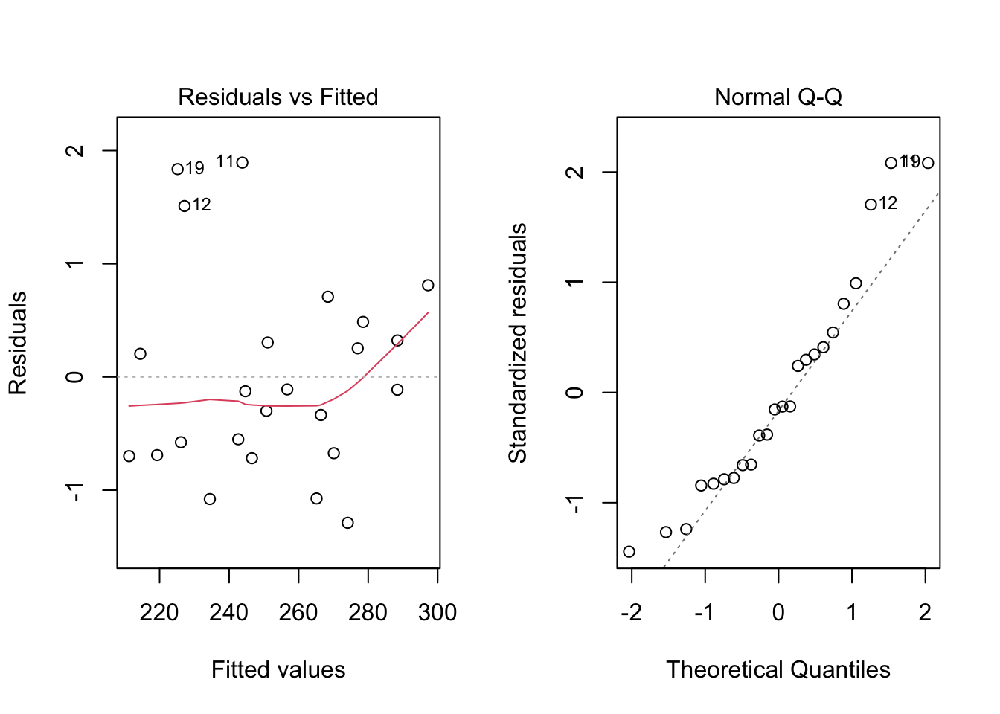
par(mfrow = c(1, 1))From the plots, the assumptions of equal variance and normality for the residuals seem to hold. However, as fewer data points make the visual analysis difficult, it is also important to run the tests, namely, ncvTest() and shapiro.test() for the residuals (residuals()).
ncvTest(model4)## Non-constant Variance Score Test
## Variance formula: ~ fitted.values
## Chisquare = 1.481062, Df = 1, p = 0.22361shapiro.test(residuals(model4))##
## Shapiro-Wilk normality test
##
## data: residuals(model4)
## W = 0.93153, p-value = 0.1055From the tests results, we fail to reject the null hypotheses—meaning that there is no evidence from the data that the assumptions of equal variance and normality for the residuals do not hold.
Our final model is
\[\begin{align*} \texttt{response}_i &= -5.495 + 0.125\texttt{var1}_i + 2.039\texttt{var2}_i + 9.975\texttt{var5}_i \end{align*}\]
Now that we have a “good” fitted model, we can predict the value of response for new values of var1, var2, and var5. For instance, we can predict the value of response, such that var1, var2 and var5 are equal to 55, 100, and 70, respectively. We can also include a confidence and a prediction interval.
newdata <- data.frame(var1 = 55, var2 = 100, var5 = 70)
(pred1 <- predict(object = model4, newdata = newdata, interval = 'confidence'))## fit lwr upr
## 1 903.5433 891.3115 915.7751(pred2 <- predict(object = model4, newdata = newdata, interval = 'prediction'))## fit lwr upr
## 1 903.5433 891.1548 915.9318